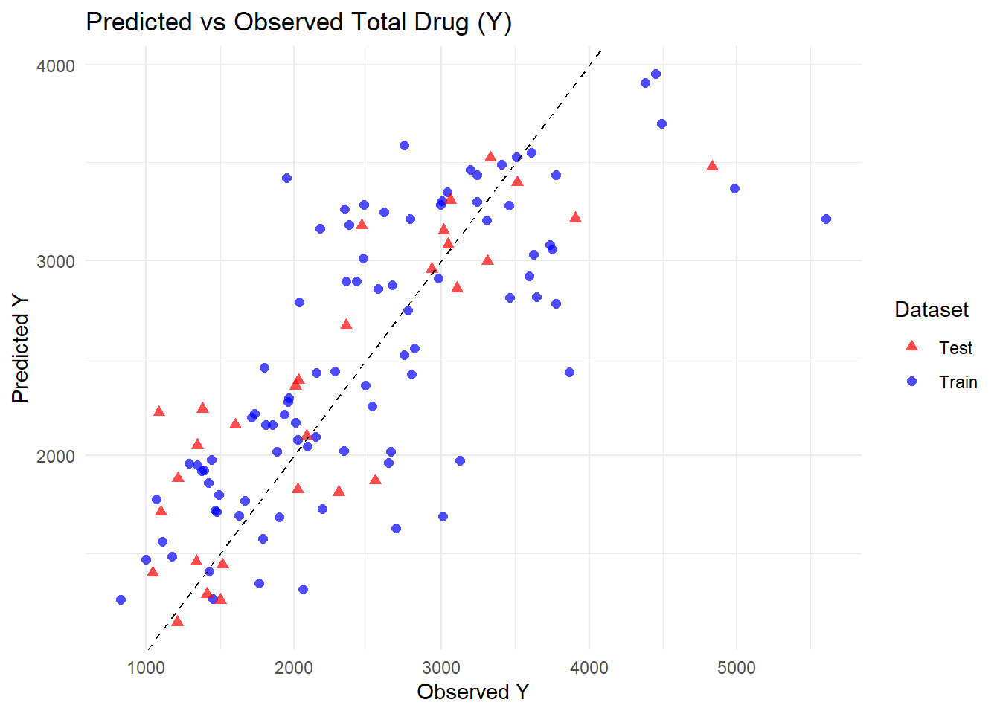

This report explores the Mavoglurant pharmacokinetic dataset. The goal is to clean the data, perform exploratory data analysis, and fit predictive models using the tidymodels framework.
library(nlmixr2data)library(ggplot2)
Warning: package 'ggplot2' was built under R version 4.4.3
library(dplyr)
Attaching package: 'dplyr'
The following objects are masked from 'package:stats':
filter, lag
The following objects are masked from 'package:base':
intersect, setdiff, setequal, union
library(tidyverse)
Warning: package 'tidyverse' was built under R version 4.4.3
Warning: package 'tibble' was built under R version 4.4.3
── Conflicts ────────────────────────────────────────── tidyverse_conflicts() ──
✖ dplyr::filter() masks stats::filter()
✖ dplyr::lag() masks stats::lag()
ℹ Use the conflicted package (<http://conflicted.r-lib.org/>) to force all conflicts to become errors
library(tidymodels)
Warning: package 'tidymodels' was built under R version 4.4.3
ggplot(mavoglurant, aes(x = TIME, y = DV, group = ID, color =factor(DOSE))) +geom_line(alpha =0.6) +geom_point(size =1) +labs(title ="DV Over Time by Dose",x ="Time",y ="DV",color ="Dose" ) +theme_minimal()
We remove observations where OCC = 2 because individuals received the drug more than once and we restrict the analysis to the first occasion.
mavoglurant_occ1 <- mavoglurant %>%filter(OCC ==1)ggplot(mavoglurant_occ1,aes(x = TIME,y = DV,group = ID,color =factor(DOSE))) +geom_line(alpha =0.6) +geom_point(size =1) +labs(title ="DV Over Time by Dose (OCC = 1)",x ="Time",y ="DV",color ="Dose" ) +theme_minimal()
Data Cleaning
We compute total drug exposure (Y) by summing DV values for each individual after removing TIME = 0.
# Exclude TIME == 0 and compute sum of DV per individualdv_sum <- mavoglurant %>%filter(OCC ==1, TIME !=0) %>%group_by(ID) %>%summarize(Y =sum(DV, na.rm =TRUE)) %>%ungroup()# Check dimensionsdim(dv_sum)
[1] 120 2
dose_data <- mavoglurant %>%filter(OCC ==1, TIME ==0)dim(dose_data)
[1] 120 17
final_data <- dose_data %>%left_join(dv_sum, by ="ID")dim(final_data)
[1] 120 18
We convert categorical variables to factors and keep only the relevant predictors and outcome.
We begin by examining general summary statistics to understand the scale and variability of the variables.
summary(clean_data)
Y DOSE AGE SEX RACE
Min. : 826.4 Min. :25.00 Min. :18.00 1:104 1 :74
1st Qu.:1700.5 1st Qu.:25.00 1st Qu.:26.00 2: 16 2 :36
Median :2349.1 Median :37.50 Median :31.00 7 : 2
Mean :2445.4 Mean :36.46 Mean :33.00 88: 8
3rd Qu.:3050.2 3rd Qu.:50.00 3rd Qu.:40.25
Max. :5606.6 Max. :50.00 Max. :50.00
WT HT
Min. : 56.60 Min. :1.520
1st Qu.: 73.17 1st Qu.:1.700
Median : 82.10 Median :1.770
Mean : 82.55 Mean :1.759
3rd Qu.: 90.10 3rd Qu.:1.813
Max. :115.30 Max. :1.930
# A tibble: 2 × 4
SEX n mean_Y sd_Y
<fct> <int> <dbl> <dbl>
1 1 104 2478. 959.
2 2 16 2236. 983.
Total drug exposure (Y) appears somewhat higher on average in individuals coded as sex = 1 compared to sex = 2
Y vs. Age
ggplot(clean_data, aes(x = AGE, y = Y)) +geom_point(alpha =0.7) +geom_smooth(method ="lm", se =FALSE) +theme_minimal() +labs(title ="Total Drug (Y) vs Age")
`geom_smooth()` using formula = 'y ~ x'
The scatterplot of total drug exposure (Y) versus age shows substantial variability across all ages, with no strong visible linear trend.
Y vs. Dose
ggplot(clean_data, aes(x =factor(DOSE), y = Y)) +geom_boxplot() +theme_minimal() +labs(title ="Total Drug by Dose", x ="Dose")
Total drug exposure (Y) increased with Dose, which would be expected.
Y vs. Sex
ggplot(clean_data, aes(x = SEX, y = Y)) +geom_boxplot() +theme_minimal() +labs(title ="Total Drug by Sex")
The boxplot comparing total drug exposure (Y) across sex groups shows that individuals coded as sex = 1 have a slightly higher median exposure than those coded as sex = 2.
Distribution of Y
ggplot(clean_data, aes(x = Y)) +geom_histogram(bins =20) +theme_minimal() +labs(title ="Distribution of Total Drug (Y)")
Y AGE WT HT
Y 1.00000000 0.01256372 -0.2128719 -0.1583297
AGE 0.01256372 1.00000000 0.1196740 -0.3518581
WT -0.21287194 0.11967399 1.0000000 0.5997505
HT -0.15832972 -0.35185806 0.5997505 1.0000000
pairs(numeric_vars)
The outcome variable Y shows only weak correlations with demographic variables, suggesting that dose may be the primary driver of exposure rather than age, weight, or height.
Weight and height are strongly positively correlated (r = 0.599), which reflects expected physiological relationships. Age is moderately negatively correlated with height, indicating that older individuals tend to be shorter in this dataset. Overall, no strong unexpected relationships were observed.
Modeling
Linear regression models predicting Y using Dose only:
lm_spec <-linear_reg() %>%set_engine("lm")recipe_dose <-recipe(Y ~ DOSE, data = clean_data)workflow_dose <-workflow() %>%add_recipe(recipe_dose) %>%add_model(lm_spec)fit_dose <-fit(workflow_dose, data = clean_data)pred_dose <-predict(fit_dose, clean_data) %>%bind_cols(clean_data)metrics(pred_dose, truth = Y, estimate = .pred)
# A tibble: 3 × 3
.metric .estimator .estimate
<chr> <chr> <dbl>
1 rmse standard 666.
2 rsq standard 0.516
3 mae standard 517.
Linear regression models predicting Y using all predictors:
recipe_all <-recipe(Y ~ ., data = clean_data)workflow_all <-workflow() %>%add_recipe(recipe_all) %>%add_model(lm_spec)fit_all <-fit(workflow_all, data = clean_data)pred_all <-predict(fit_all, clean_data) %>%bind_cols(clean_data)metrics(pred_all, truth = Y, estimate = .pred)
# A tibble: 3 × 3
.metric .estimator .estimate
<chr> <chr> <dbl>
1 rmse standard 591.
2 rsq standard 0.619
3 mae standard 444.
The regression analysis shows that dose is the primary determinant of total drug exposure (Y). A linear model using dose alone explained approximately 52% of the variability in exposure (R-squared = 0.516), with an RMSE of 666 and MAE of 517, indicating moderate prediction error. When all predictors (dose, age, sex, race, weight, and height) were included, model performance improved modestly (R-squared = 0.619, RMSE = 591, MAE = 444). This suggests that demographic variables contribute some additional explanatory value, but dose remains the dominant driver of exposure.
Relationships between Y and other predictors such as age, sex, weight, and height were comparatively weak and showed substantial overlap across groups.
We now treat SEX as the outcome and fit logistic regression models.
Split the data into a training set and a test set.
Logistic regression models were then used to predict sex from dose alone and from all available predictors. Although accuracy appeared high in some cases, ROC–AUC values were near 0.5, indicating that the models had little true discriminatory ability and largely reflected class imbalance rather than meaningful prediction.
Overall, the analysis demonstrates that dose strongly determines drug exposure in this dataset, demographic variables play a comparatively minor role, and sex cannot be reliably predicted from this dataset.
# A tibble: 1 × 6
.metric .estimator mean n std_err .config
<chr> <chr> <dbl> <int> <dbl> <chr>
1 rmse standard 646. 10 64.8 pre0_mod0_post0
What changed?
We see that the RMSE values increased slightly for both models. Previously, Model 1 had a training RMSE of approximately 702, and Model 2 had about 627; after cross-validation, Model 1’s mean RMSE rose to 691 and Model 2’s to 646. This change is expected because cross-validation evaluates each model on subsets of data that were not used for fitting, giving a more realistic estimate of performance on unseen data. What did not change is the overall pattern of model performance: Model 2 still performs best, followed by Model 1, while both continue to outperform the null model.
This section added by Esther Palmer
plot predicted vs. observed values
p1 <- pred1 %>%ggplot(aes(x=Y, y=.pred)) +geom_point() +ggtitle("Dose as predictor")p1
I’m not entirely sure this went correctly, as the error bars don’t overlap with the dots? however things do seem to kinda congregate around the line.
Part 3
pred_test <-predict(fit_model2, test_data) %>%bind_cols(test_data) %>%mutate(dataset ="Test")pred_train <- pred2 %>%mutate(dataset ="Train")# Combine train and test predictionspred_all <-bind_rows(pred_train, pred_test)# Plot predicted vs observed for both datasetsggplot(pred_all, aes(x = Y, y = .pred, color = dataset, shape = dataset)) +geom_point(size =2, alpha =0.7) +geom_abline(slope =1, intercept =0, linetype ="dashed") +labs(title ="Predicted vs Observed Total Drug (Y)",x ="Observed Y",y ="Predicted Y",color ="Dataset",shape ="Dataset" ) +theme_minimal() +scale_color_manual(values =c("Train"="blue", "Test"="red")) +scale_shape_manual(values =c("Train"=16, "Test"=17))

Does any model perform better than the null model? Yes, both Model 1 (dose only) and Model 2 (all predictors) perform better than the null model. The null model simply predicts the mean total drug exposure (Y) for all individuals, resulting in a high RMSE (945) and no ability to explain variability. By comparison, including dose alone or dose with demographic predictors reduces RMSE significantly and increases R-squared, demonstrating that both models capture variations in the data and outperform a null baseline.
Does Model 1 with only dose improve results over the null model? Model 1 clearly improves performance over the null model. The training RMSE drops to 702, and R-squared reaches 0.52, indicating that dose alone explains about half of the variability in total drug exposure. While the model captures the main signal in the data, it ignores demographic differences and residual variability, so it would provide reasonable but not highly precise predictions for individual patients. It is “usable” for rough estimates or exploratory analyses but limited for detailed dosing decisions.
Does Model 2 with all predictors further improve results? Model 2 incorporates dose, age, sex, weight, and height, resulting in modest further improvement over Model 1. RMSE decreases to 627, and R-squared increases to 0.62, indicating that demographic factors explain some additional variability in Y, though dose remains dominant. The results make sense given that the EDA showed weak correlations between Y and demographics. The model generalizes well to the test data, as predictions for unseen individuals overlap with training data and cluster around the 45 degree line, suggesting minimal overfitting. Model 2 is more precise than Model 1 and can be considered usable for research-level predictions, though residual variability remains, limiting its precision for patient-level dosing.